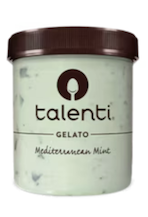

Talenti Sorbet is a dairy-free and vegan friendly sorbet brand. They focus on using fresh fruits and whole foods to create the sorbets, and have 6 core flavors. Seasonal Flavors include Mediterranean Mint and Double Dark Chocolate.

Tillamook is a dairy product-based company based in Oregon, known for their premium cheese and ice cream. In my opinion, the ice cream is extraodinary.
Tillamook is a dairy product-based company based in Oregon, known for their premium cheese and ice cream. In my opinion, the ice cream is extraodinary.
In San Francisco's JapanTown, all the waiters at this restaurant are robots. You can sit at a booth where a train will deliver your order, but for more fragile meals and drinks, a robot will come and serve you. Its a totally unique experience, and everyone should try it sometime!
Although it is new, Little Original Joe's grew in popularity immediately after opening, and is packed everyday. It maybe be busy, but it's certainly not overrated. Serving premium modern italian food, it is family friendly and can be for everyone!
If you don't know this fast food restaurant, you should. Known for it's soft serve and super burgers, kids love it and parents enjoy it as well. It is super accessible for everyone and should be tried as much as possible.